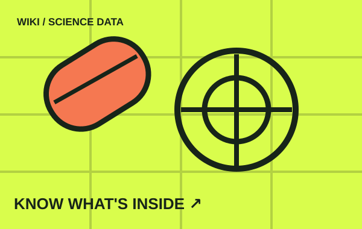

DATA WIKI / READ THE LABEL건강 정보는,
건강 정보는,
데이터부터.
건강기능식품·성분·의약품의 공개 정보를 구분해 살펴봅니다. 확인할 수 없는 항목은 추정하지 않습니다.
검색 기능은 디자인 시안이며, 실제 데이터베이스 조회와 연결되지 않았습니다.

01 / SELECT CATEGORY무엇을
CHOOSE YOUR DATA TYPE무엇을
알고 싶나요?
02 / INDEX LIBRARY위키 데이터
위키 데이터
탐색 보드.
DATA RECORD / 001
⊕
제품 상세 데이터
제조사·신고번호·근거 확인된 성분 필드
PRODUCTOPEN ↗
DATA RECORD / 002
C
성분별 안내
검증된 원자료와 일반적 정보 구분
INGREDIENTOPEN ↗
DATA RECORD / 003
+
의약품 공개 정보
효능·사용 시 주의사항은 공식 원문으로 확인
MEDICINEOPEN ↗
DATA RECORD / 004
⇄
제품 정보 비교
결측을 0으로 처리하지 않는 비교 도구
COMPARISONOPEN ↗
DATA RECORD / 005
#
주제별 제품 탐색
제품 태그와 분류 근거를 안내
CATEGORYOPEN ↗
DATA RECORD / 006
↗
라벨 읽기 가이드
실제 함량과 표시기준 확인하는 방법
GUIDEOPEN ↗
DATA INTEGRITY FIRST모르는 값은
모르는 값은
모른다고 씁니다.
영양 성분값이 공개 데이터에 없다는 사실은 해당 제품에 그 성분이 없다는 뜻이 아닙니다. 사용자는 제품 라벨과 공식 공개 자료를 확인할 수 있어야 합니다.
건강기능식품은 의약품이 아닙니다. 개인별 복용 판단은 약사·의료진과 상담하세요.